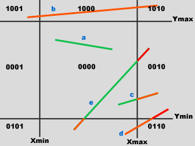
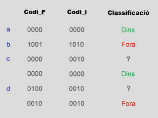

Analitza si un segment de recta definit per dos punts P1 i P2, és interior, exterior o parcialment interior a una finestra. El subprocés corresponent indica si el segment és visible o no i retorna el tros de segment visible.
Un dels algorismes més utilitzats és el de Cohen-Sutherland, donat que una bona part de les operacions es fan en lògica de bits. Es basa en detectar eficientment els segments totalment visibles i gran part dels no visibles. En casos dubtosos, es detecta amb un mínim de càlculs quines rectes de la finestra tallen el segment i es calculen el punts de tall que seran considerats nous vèrtexs del segment substituint als exteriors a la finestra.
Per realitzar aquests càlculs es consideren les 9 regions de l'espai que les rectes limitadores de la finestra defineixen, etiquetades amb 4 bits de manera que el bit_i i=1..4 val 0 si els punts de la zona són interiors a la recta r_i de la finestra. Analitzeu en la figura l'etiquetatge de les diferents zones. També a la figura s'han dibuixat diferents segments ambs els que podeu analitzar el seguiment de l'algorisme que a continuació s'especifica.
|  |  |
Donat un segment limitat per dos punts P1 i P2:
Podeu fer el seguiment del retallat dels segments de la figura sobre l'algorisme resultant. Si intenteu implementar l'algorisme, utilitzeu lògica de bits per a detectar la classificació dels punts.
accio Retalla_Segment(P1,P2,xm,ym,xM,yM,visible)
codifica (P1,xm,ym,xM,yM,codi1)
codifica (P2,xm,ym,xM,yM,codi2); fi:=fals;
repetir
si dins(codi1,codi2) llavors visible:=cert; fi:=cert
altrament
si fora(codi1,codi2) llavors visible:=fals; fi:=cert
altrament
si exterior(codi1) llavors
troba_frontera_finestra_exterior(codi1,i)
nou_extrem_segment (P1,i)
codifica (P1,codi1)
altrament
troba_frontera_finestra_exterior(codi2,i)
nou_extrem_segment (P2,i)
codifica (P2,codi2)
fisi
fisi
fisi
finsque fi
firepetir
fiaccio